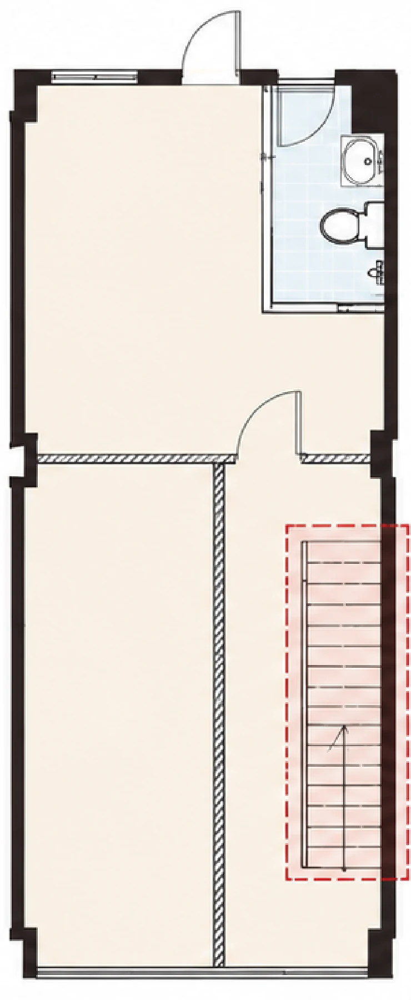
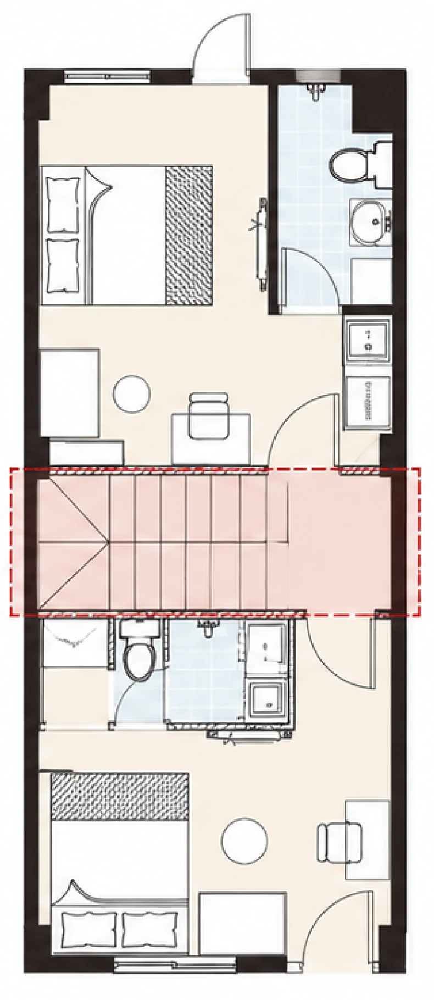
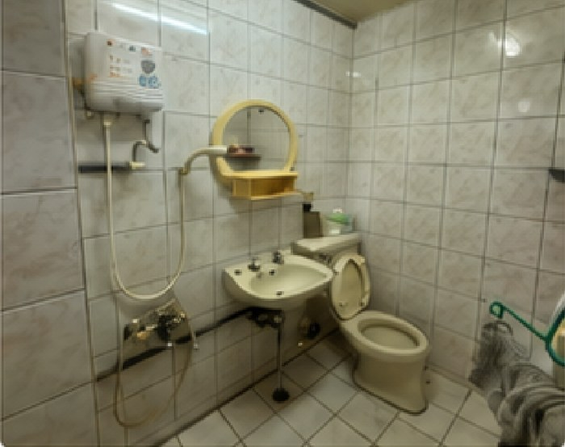
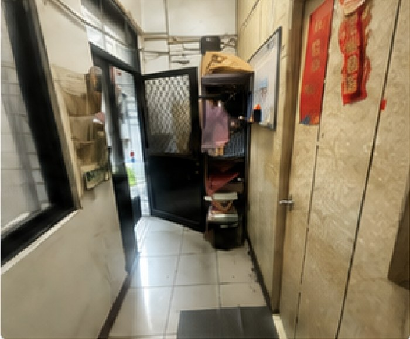
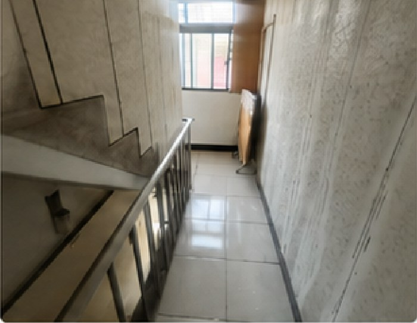
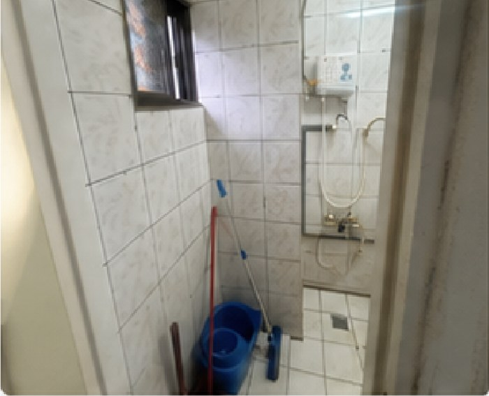

包租・代租・代管房東不用自己碰租客
房子空著，或出租後不想處理找客、收租、修繕。可以只委託出租，也可以整個交給我們管，或由我們包租、按月付你固定租金。租客經過工作與收入文件審核。
- 執行
- 優式租售管理 三重窩的家加盟店
- 計費
- 代租按成交收服務費／代管按月租金比例／包租房東零費用、保證租金
好引薦
想出租、卻找不到人幫忙管的房東
壞引薦
期望零風險高報酬、不願付合理服務費的客戶
窩的家集團｜BNI 華都更分會 一對一
要買、要改、要租、要周轉，還是要出場，我先幫你把方向和數字算清楚，再把窩的家對應的專業團隊接進來。
認識瓊安
我是張瓊安，窩的家集團執行長特助。入行 9 年，做過代銷、建設與百億建案的專案管理；現在負責把集團的仲介、設計裝修、租賃代管串成一條線，也主導全公司的資訊化。你不用自己一家一家找：先告訴我你的房子和想達成的事，我判斷該走哪一步、該找誰，執行交給各段最專業的同事。
我可以幫你接上的服務
房子空著，或出租後不想處理找客、收租、修繕。可以只委託出租，也可以整個交給我們管，或由我們包租、按月付你固定租金。租客經過工作與收入文件審核。
想出租、卻找不到人幫忙管的房東
期望零風險高報酬、不願付合理服務費的客戶
名下有房想周轉一筆資金，或手上有閒錢想變成收租資產、但不想自己操作。從增貸評估、陪跑選件，到改造與出租。
名下有房、想周轉一筆資金，卻捨不得賣房的人
期望零風險高報酬的糾紛型客戶
老屋要出租、店面要開、辦公室要重整，從格局、預算到施工一起規劃。收租物件以好租、租得到好價格為目標。
老公寓想拉高租金的屋主
只想壓低裝修預算、不願配合標準化規劃的屋主
想買一間能收租的房子，或手上的房子想賣。進場用租金與投報挑物件、談價格，出場也用同一套數字定價。
想買會賺的老屋的人、持有期滿要出場的屋主
只看價格不看物件狀況、不配合估價流程的買方
實際費用依標的評估後報價。
代表案例｜收租型物件
這不是一個裝修案，是一整個團隊的接力：選件、算投報、改格局、定價、招租、代管。
這是窩的家陪跑學員的真實案例：屋主自己出資、自己決策，窩的家團隊負責各段執行，我負責整理與分享。


陪跑教練
三重、近捷運、4 層加頂樓的老透天。挑它有三個條件：銀行鑑價過得了、樓層多（能隔的間數多）、地點好（好租也好賣）。
設計工程
原本樓梯卡在一側，每層被切成一大一小，小的那塊放不下衛浴。把樓梯移到中段、大門改到右側，每層前後各一間，9 間格局一致。
租賃仲介
周邊套房行情約 1–2 萬。靠一致的格局、家具家電與屋主福利配套，每間月租 2.5 萬（頂樓露臺戶 3 萬）；每位租客都經過工作與收入文件審核。
代管團隊
找客、收租、修繕交給代管，屋主不用自己碰租客。




引薦
只比最低價、期待零風險高報酬的人。
一句引薦說法
「你還不知道該找仲介、設計師還是代管的話，先找窩的家的瓊安聊聊。她會幫你把方向理清楚，再把她們團隊裡對的人接進來。」
一對一補充資料
建案定位、客戶收款、ERP 請購請款。
用 Ragic 建置代銷 ERP、帶 4 人團隊；流程再造讓簽核關卡 24→10、年省約 350 小時。
客戶收款、銀行對保、百億建案前期市調。
信義區百億建案 PM（2024 年結案 130 億）、皇長建設品牌從零建置、建置 ProSystem 企業系統。
跨境電商 ERP 系統規劃。
主導全公司資訊化（89 張資料表、41 支自建前端、7 支機器人、31 位同仁使用中）。
最想補齊
聯絡